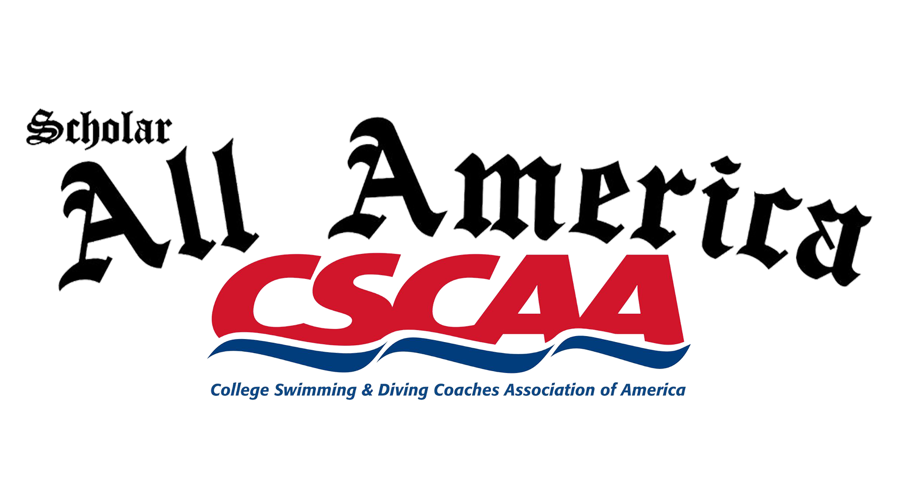
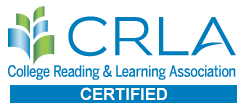
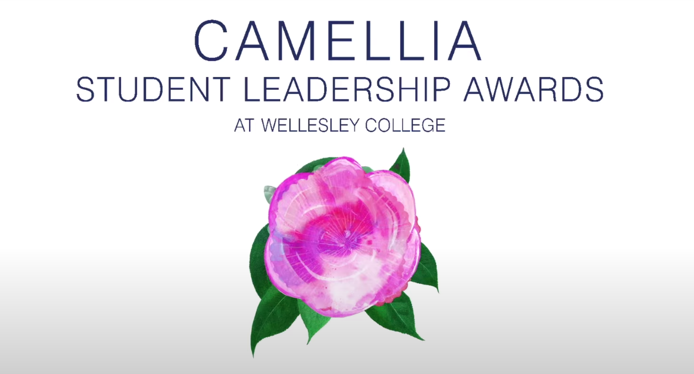

| 
CSCAA Scholar All-America Team Spring 2019, Spring 2020, Fall 2020, Spring 2021 I was named part of the College Swimming & Diving Coaches Association of America (CSCAA) Scholar All-America Team for academic excellence as a student athlete. This award is given to student-athletes who maintain an excellent gpa in any semester after their first semester of college. |
| 
CRLA International Peer Educator Training Program Coach, Level 1 Spring 2020 A peer educator is a student who is of similar status as the person being mentored. Through my work as an Academic Success Coach at Wellesley, I had the opportunity to work, educate, and advise my peers within an academic setting. Through training and work hours, I gained this prestigious certification. |
| 
Wellesley College Camellia Student Leadership Award Nomination Spring 2020, Spring 2021 The Camellia Student Leadership Award honors students who have demonstrated growth, grace, and leadership during their time at Wellesley College and have made a difference in the campus community. I was nominated for this award in Spring 2020 for my work as an Academic Success Coach and in Spring 2021 for my work on the executive board of The Wellesley News. |